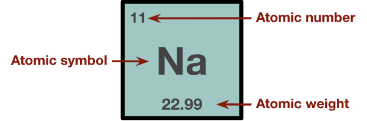

Once you have the molar mass (g/mol), you can convert the concentration of a substance in a solution from molarity (mol/L) to mass per volume (g/L) using:

Figure 1. Each element box of the periodic table contains the atomic weight of an element. This element box for sodium (Na) shows an atomic weight of approximately 22.99. This value represents the average mass of sodium, weighted by the relative abundances of its naturally occurring isotopes on Earth, and is used as the molar mass in unit conversions from mol/L to mg/L.
A scientist has a solution of sodium with a known molarity of 1.20 × 10⁻⁶ mol/L. In order to convert the concentration to mass per volume, the scientist would calculate as follows:
Given:
concentration = (1.20 × 10⁻⁶ mol/L) × (22.99 g/mol)
concentration = 0.0000276 g/L
Scientific notation: 2.76 × 10⁻5 g/L
concentration = (0.0000276 g/L) × (1000 mg/g)
concentration = 0.0276 mg/L
Scientific notation: 2.76 × 10⁻2 mg/L